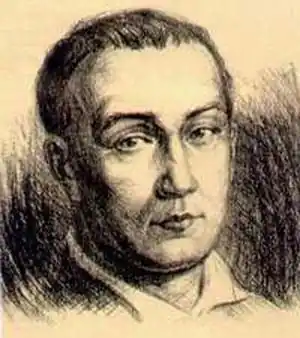
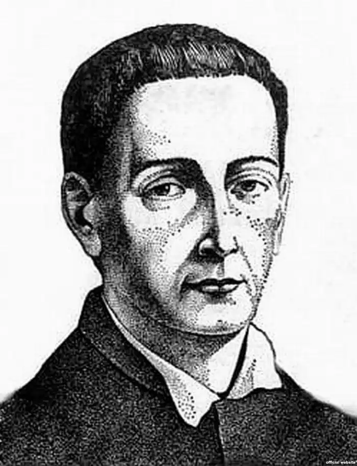
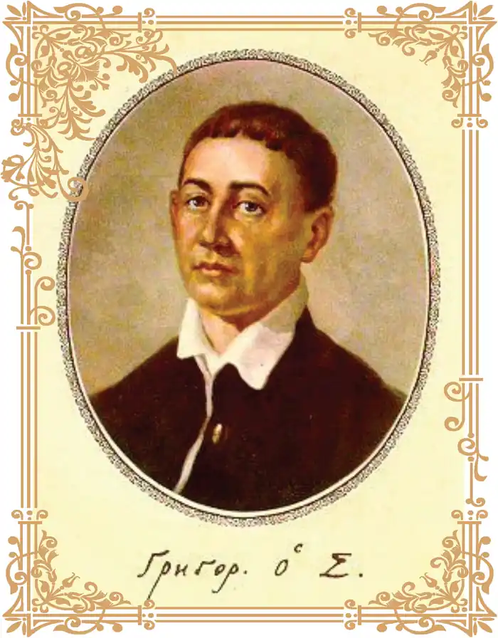
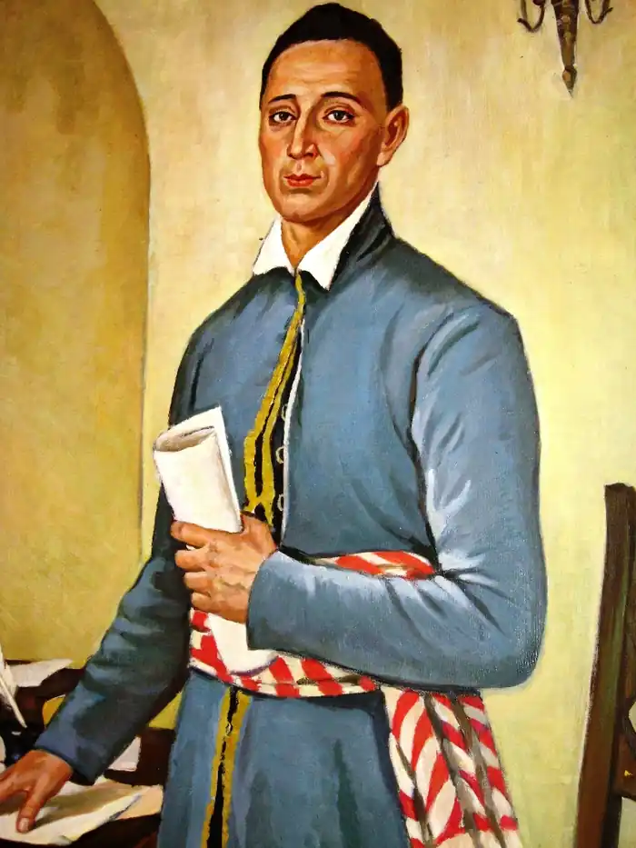
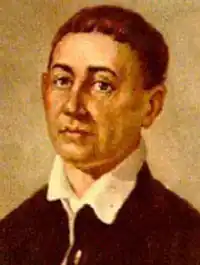

Сковорода Григорій Савич
(1722-1794)
просвітитель-гуманіст, філософ, поет, перекладач Народився 3 грудня 1722 року в селі Чорнухах на Полтавщині в сім’ї малоземельного козака. Батьки відзначалися побожністю, миролюбством, гостинністю, чесністю. Зростаючи у середовищі мудрої праведності, їхній син з ранніх літ відзначався схильністю до зосередженості на своєму внутрішньому світі, твердістю духу, великим бажанням до науки і знань. У 1738 році батьки віддають Григорія на навчання до Київської академії. Досить швидко він став виділятися успіхами серед своїх однолітків. У 1742 році його запрошують до придворної співацької капели в Петербург. Після двох років перебування у північній столиці він повертається продовжувати перерване навчання. Людина виняткових здібностей і гострого розуму, Г.Сковорода здобув в академії глибокі знання з філософії, вітчизняної, античної, західноєвропейської літератур, досконало опанував кілька іноземних мов, серед яких були латинська, грецька, німецька. У 1750 році трапляється нагода вирушити у тривалу поїздку за кордон, з якої Григорій Савич скористався. Він відвідує Австрію, Словаччину, Польщу, Німеччину, де знайомиться з життям тамтешніх народів, вивчає їхні звичаї і ближче знайомиться з культурою, передовими філософськими ідеями, літературними течіями. Безсумнівно, ця подорож справила надзвичайно важливе значення на формування поглядів майбутнього філософа. Три роки тривала ця експедиція, повернувшись після якої в Україну, Г.Сковорода займається педагогічною діяльністю. Працює в Переяславському колегіумі, де запроваджує багато новаторських ідей, чим, звісно, викликав невдоволення багатьох. Саме за недотримання усталених методів викладання його звільняють від цієї діяльності. Після цього Г.Сковорода тривалий час працює придворним учителем у поміщика Степана Томари на Переяславщині. Він довго не погоджувався на таку службу, але, хитрощами заманений і заведений до панської садиби, змушений був усе-таки пристати на непривабливу пропозицію. Любов, привітна приязнь, якою відзначався колишній вельможа, більш за все впливали на Григорія Савича. Залишаючись при дворі, він був сповнений щиросердним бажанням стати корисним людям. Ці роки відзначилися поглибленим зближенням з життям народу, його внутрішнім єством, і це допомагало йому у пізнанні як самого себе, так і навколишнього світу. Часто у вільні від основних обов’язків години він мандрував околицями села: гаї, діброви, поля були співрозмовниками або співучасниками його роздумів. Усе більше і більше віддаляючись від суєтності, він з хвилюючим самозреченням наближався до найпривабливішого свого пристанища — любомудрості. З 1759 по 1769 роки Г.Сковорода працює як викладач поетики і етики в Харківському колегіумі. Протест і несприйняття схоластичних догматів навчального процесу послужили причиною його звільнення. Понад чверть століття, "переповнюючись живим відчуттям істини", мандрує він містами і селами Лівобережної України, часто перебираючись і в сусідні губернії, даруючи народові знання й досвід духовного самопізнання. З 1753 по 1785 рік Г.Сковорода пише переважну більшість своїх поетичних творів, що склали збірку "Сад Божественних пісень". Простий і образний стрій думок, доступність вчення, власний життєвий подвиг привертали до його особистості увагу всієї спільноти. Особливість же його подвижництва полягає в тому, що він прагнув збудити "мислячу силу" в свого народу, підняти в людині все краще, закладене у неї природою й Богом, і розвивати, долучаючи до цінностей вищих і вічних. Досягнення ж їх означає спасіння й дарує щастя. Так, у "трудах праведних", і скінчив свій життєвий шлях один з найгеніальніших філософів світу Григорій Савич Сковорода. Помер він 9 листопада 1794 року в селі Пан-Іванівці (нині — Сковородинівка) на Харківщині. Перед смертю поет i філософ заповідав поховати себе на підвищенні біля гаю, а на могилі зробити напис: "Світ ловив мене, та не спіймав". Таким чином Г.Сковорода ще раз заявив про свою відданість духовному спасенному життю перед земними суєтністю і марнотою. Серед загальної атмосфери кволого духу української нації XVIII століття яскравим зблиском стало життя будителя нації, філософа і поета Григорія Савича Сковороди. Здається, з самісінького дна політичного занепаду, в час майже повної руїни колишньої величі з’явилася постать, що уособлювала найкращі якості нашого народу: незламність духу, волелюбство, мудрість, подвижництво. Геній народу, втілений у постать мандрівного філософа-вчителя, пробуджував колективний розум і запалював його до прагнення й утвердження існування в дусі. Вроджене відчуття і набуті знання досить швидко виробилися у Г.Сковороди у непохитне переконання, що животворящим началом людини є її дух. Самопізнання, заглиблення у свій внутрішній світ, уміння слухати себе, голос своєї совісті дозволяють правильніше й чіткіше осягнути покликання людини на цій землі, викристалізувати думки і почуття, аби навести духовний лад у своїй душі. Бо тільки в чистоті, несуєтності, благоговійності й мудрості можна почути істинний голос свого внутрішнього "я", голос духу. Феномен постаті Григорія Савича Сковороди — у дивовижному гармонійному поєднанні краси тілесної й духовної. У власному житті він сповідував виразні й тверді принципи: самопізнання і внутрішня згода з волею Бога. Окрім того, філософ постійно наголошує, що людина має невичерпний духовний потенціал, який лише необхідно спрямувати у потрібне русло, на справі Божі: пізнання і творчість. У своїх філософських творах великий мислитель розмірковував над основами буття. Вроджена чутливість, схильність до роздумів, здібність до знань, любов до праці — все це сприяло формуванню особ-ливого внутрішнього світу, наповненого істинною мудрістю, справ-жніми почуттями. Це й дозволило йому визначити чітку систему поглядів на щоденне земне існування. Показником такої справжньої мудрості стало його переймання загальним станом духовності свого суспільства, йому було замало того, що він збагнув, відкрив для себе сенс і радість буття, йому боліло зубожене існування своєї нації. Бажання допомогти, наставити на путь істинний своїх ближніх штовхало його в нові й нові ман-дрівки, аби нести просвітницьке, рятівне слово спасіння спраглим душам. "Щастя наше є мир душевний, але мир цей до жодної речовини не стосується; він не золото, не срібло, не дерево, не вогонь, не вода, не зірки, не планети... Як здоров’я має свою точку не зовні, а всередині тіла, так мир і щастя в найглибшій точці душі нашої перебуває і є здоров’ям її та нашим блаженством. Здоров’я тіла є не що інше, як мир тілесний, як мир сердечний є пожива на здоров’я душі, і як здоров’я родиться після очищення з тіла шкідливої й зайвої мокроти, матері всіх хвороб, так і серце, очищуване від підлих світських гадок, що турбують думку, починає проглядати схований усередині себе скарб щастя свого, відчуваючи, ніби після хвороби, бажання поживи своєї, подібне до нашого горіха, який зачинає зерно життя свого в звичайному колоску. Оцих-то, хто починає себе пізнавати, закликає премудрість божа у дім свій, на гостину..." Одержимий ідеєю духовного відродження української нації, мудрець виношує у своїй ментальності образ справжнього громадянина своєї держави. У філософському трактаті "Жінка Лотова" Г.Сковорода говорить про подвійне народження людини: один раз фізично, а другий — духовно. Ця, вдруге народжена, "...людина вільна. У висоту, вглиб, вшир літає без меж. Не заважають їй ні гори, ні ріки, ні моря, ні пустелі. Провидить віддалене, прозирає приховане, заглядає у минуле, проникає у майбутнє, ходить по поверхні океану, ввіходить зачиненими дверима. Очі її голубині, орлині крила, прудкість оленя, левова відвага, вірність горлиці, вдячність лелеки, незлобність ягняти, швидкість сокола, журавлина бадьорість. Тіло її — діамант, смарагд, сапфір, яшма, кришталь і рубін. Над головою її літає седмиця божих птахів: дух смаку, дух віри, дух надії, дух милосердя, дух поради, дух прозріння, дух чистосердя. Голос її — голос грому..." Перед нами словесний портрет мовби ідеальної людини, виплеканий уявою і досвідом філософа, що втілив у ньому найкращі моральні та фізичні якості. Увесь творчий доробок Григорія Сковороди, який включає 17 філософських творів, 7 перекладів, збір-ник "Сад Божественних пісень", "Байки Харківські", — це єдина система поглядів, єдина філософія. Свого часу І.Франко назвав Г.Сковороду "національним філософом", оскільки він дав вираження глибоким і суттєвим духовним цінностям нації. Мудрість Г.Сковороди вирішальною мірою була виплекана премудрістю віри. Насамперед це стосується розуміння смерті. Воно узгоджується з догматами віри: смерть як вінець життя і двері в безсмертя. "Треба своєчасно приготувати собі зброю проти цього ворога не різного роду міркуваннями, бо вони не дійсні, але спокійним узгодженням своєї волі з волею Творця. Такий душевний мир готується заздалегідь, він зростає тихо у тайні серця, зміцнюється почуванням зробленого добра". Усвідомлюючи своє покликання й часове призначення пробудження духу нації, Григорій Савич Сковорода кожним словом, кожним кроком, кожним помислом виконував свою місію. Власним життям він канонізував високі моральні принципи: волелюбність, твердість духу, гідність, щирість, добролюбство, прагнення мудрості, надійність, любов до ближнього. Цим утверджувалися моральні підмурки нового українського суспільства. Творча спадщина великого філософа стала невичерпним джерелом мудрості й життєдайної наснаги для українського народу на довгі-довгі віки. Вона злободенна й сьогодні. Вона актуальною буде і завтра. Межі духовному вдосконаленню людини так і не визначено. ** Подивись на людину і пізнай її! На кого схожа істинна людина, що панує в плоті? Подібна на добрий і повний колос. Розсуди ж: не стебло з листочками є колос, не солома його, не полова, не зовнішня шкірка, що одягає зерно, і не тіло зерна, а колос є сама сила, яка створює стебло, солому, тіло зерна й інше, у тій силі все оте невидимо перебуває. Вона виявляє все те весною, коли вся зовнішність на зерні зігнила, щоб утворення плоду не було приписане мертвій землі, тобто гниючій зовнішності, а щоб вся слава була віддана невидимому Богу, який усюди діє своєю таємною правицею, щоб лиш він був у всьому голова, а вся інша зовнішність — п’ята.